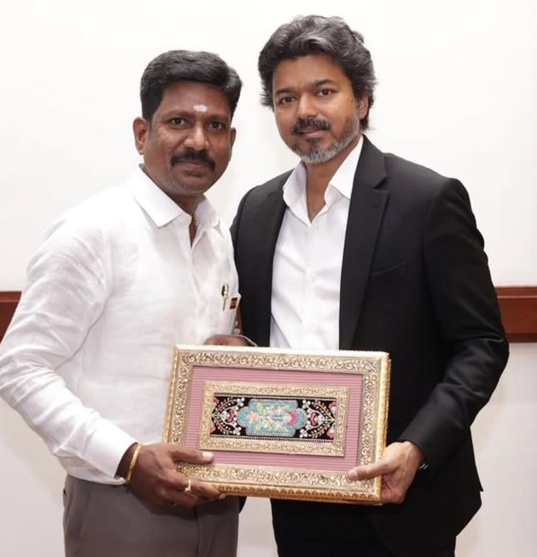

A student's future should be decided by ability, not by family income. Ambattur's skill mission puts industry-grade training within reach of every EWS student — engineering, arts & science, and polytechnic.
An initiative of Thiru Balamurugan, MLA — Ambattur, executed on the ground by Thiru S. Balaji, B.Com., B.L., M.B.A.
திரு. பாலமுருகன்MLA · Ambattur Constituency
[0,000]
பயிற்சி பெறும் மாணவர்கள்
Students to be trained
[00]
இணை நிறுவனங்கள்
Partner institutions
3
திறன் பாடநெறிகள்
Skill tracks
[00]
தொழில்துறைப் பங்குதாரர்கள்
Industry partners
எண்கள் உறுதி செய்யப்பட வேண்டும் · Figures to be confirmed by the constituency office
திறன் இயக்கம்SKILL MISSIONஅம்பத்தூர்EWS STUDENTS FIRSTபொறியியல்ARTS & SCIENCEபாலிடெக்னிக்

திரு. பாலமுருகன், திரு. ஜோசப் விஜய் அவர்களுடன் — Thiru Balamurugan with Thiru Joseph Vijay.
இயக்கத்தின் பார்வை·The movement's vision
மாண்புமிகு திரு. ச. ஜோசப் விஜய்
Chief Minister of Tamil Naduதமிழ்நாடு முதலமைச்சர்தமிழக வெற்றிக் கழகம்
ஒரு மாணவரின் எதிர்காலத்தை அவரது குடும்பத்தின் வருமானம் தீர்மானிக்கக் கூடாது — அவரது திறமை தீர்மானிக்க வேண்டும். அந்த உறுதிமொழியை அம்பத்தூர் தொகுதி களத்தில் நிறைவேற்றுகிறது.
The movement's promise is that talent, not income, decides where a young person ends up. The Ambattur skill mission is that promise carried down to the constituency — college by college, student by student.
இது மேற்கோள் அல்ல·NOT A QUOTE — office framing, replace with an approved statement
தமிழக வெற்றிக் கழகம் — அம்பத்தூர் தொகுதி
தலைமை·Leadership
பார்வையும் செயலாக்கமும்
One person sets the direction. Another makes sure it actually reaches a student in Ambattur. Both roles are named, and both are accountable.
பார்வை·Vision
திரு. பாலமுருகன்
MLA · Ambattur Constituency
தொகுதியின் திறன் இயக்கத்திற்கான தொலைநோக்குப் பார்வையை வகுத்து, கல்லூரிகள் மற்றும் தொழில்துறையுடன் இணைப்பை உருவாக்குகிறார்.
The flagship EWS training mission across engineering, arts and polytechnic streams.
கல்வி ஆதரவு
Education support
Guidance on scholarships, admissions and continuing education for first-generation students.
சுகாதாரம்
Health
Camps and health access support in the constituency wards. [Details to be added]
மகளிர் மேம்பாடு
Women's empowerment
Livelihood and self-help group support for women in Ambattur. [Details to be added]
இளைஞர் & விளையாட்டு
Youth & sport
Ground-level sport and youth activity in the wards. [Details to be added]
உள்கட்டமைப்பு
Civic infrastructure
Roads, water, drainage and public amenity work. [Details to be added]
மாணவர்களுக்கு · For students
நீங்கள் அம்பத்தூரில் படிக்கிறீர்களா? பதிவு செய்யுங்கள்.
Open to EWS students living in Ambattur, or studying at an institution inside the constituency. Bring an income certificate, your college ID, Aadhaar and one photograph.